수질환경기사 (2018-04-28 기출문제)
1과목: 수질오염개론
1. 유기화합물에 대한 설명으로 옳지 않은 것은?
- 유기 화합물들은 일반적으로 녹는 점과 끓는 점이 낮다.
- 유기화합물들은 하나의 분자식에 대하여 여러 종류의 화합물이 존재할 수 있다.
- 유기화합물들은 대체로 이온 반응보다는 분자반응을 하므로 반응속도가 빠르다.
- 대부분의 유기화합물은 박테리아의 먹이가 될 수 있다.
(정답률: 83%)

2. 도시 에서 DO 0mg/L, BODu 200 mg/L, 유량 1.0 m3/sec, 온도 20°C의 하수를 유량 6m3/sec인 하천에 방류하고자 한다. 방류지점에서 몇 km 하류에서 DO 농도가 가장 낮아지겠는가? (단，하천의 온도 20°C, BODu 1mg/L, DO 9.2 mg/L, 방류 후 혼합된 유량의 유속 3.6 km/hr이며, 혼합수의 k1 = 0.1 /day, k2 = 0.2/day, 20°C 에서 산소포화농도는 9.2mg/L이다. 상용대수기준)
- 약 243
- 약 258
- 약 273
- 약 292
(정답률: 30%)
3. 직경 3mm인 모세관의 표면장력이 0.0037kgf/m이라면 물 기둥의 상승높이 (cm)는? (단，
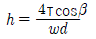
，접촉각 β =5°)- 0.26
- 0.38
- 0.49
- 0.57
(정답률: 60%)
4. 산화-환원에 대한 설명으로 알맞지 않은 것은?
- 산화는 전자를 받아들이는 현상을 말하며, 환원은 전자를 잃는 현상을 말한다.
- 이온 원자가나 공유원자가에 (+)나 (-)부호를 붙인 것을 산화수라 한다.
- 산화는 산화수의 증가를 말하며, 환원은 산화수의 감소를 말한다.
- 산화는 수소화합물에서 수소를 잃는 현상이며 환원은 수소와 화합하는 현상을 말한다.
(정답률: 74%)
5. 해수의 특성으로 틀린 것은?
- 해수는 HCO3-를 포화시킨 상태로 되어 있다.
- 해수의 밀도는 염분비 일정법칙에 따라 항상 균일하게 유지된다.
- 해수 내 전체 질소 중 약 35% 정도는 암모니아성 질소와 유기 질소의 형태이다.
- 해수의 Mg/Ca 비는 3-4 정도로 담수에 비하여 크다.
(정답률: 66%)
6. 배양기의 제한기질농도(S)가 100mg/L, 세포최대비증식계수(μmax)가 0.35hr-1일 때 Monod식에 의한 세포의 비증식계수(μ, hr-1)는? (단, 제한기질 반포화농도(Ks) = 30mg/L)
- 약 0.27
- 약 0.34
- 약 0.42
- 약 0.54
(정답률: 66%)
7. 유리산소가 존재하는 상태에서 발육하기 어려운 미생물로 가장 알맞은 것은?
- 호기성 미생물
- 통성혐기성 미생물
- 편성혐기성 미생물
- 미호기성 미생물
(정답률: 68%)
8. 자체의 염분농도가 평균 20mg/L인 폐수에 시간당 4kg의 소금을 첨가시킨 후 하류에서 측정한 염분의 농도가 55mg/L이었을 때 유량(m3/sec)은?
- 0.0317
- 0.317
- 0.0634
- 0.634
(정답률: 53%)
9. 방사성 물질인 스트론튬(Sr90)의 반감기가 29년이라면 주어진 양의 스트론툼(Sr90)이 99%감소하는데 걸리는 시간(년)은?
- 143
- 193
- 233
- 273
(정답률: 70%)
10. 우리나라 호수들의 형태에 따른 분류와 그 특성을 나타낸 것으로 가장 거리가 먼 것은?
- 하천형 : 긴 체류시간
- 가지형 : 복잡한 연안구조
- 가지형 : 호수 내 만의 발달
- 하구형 : 높은 오염부하량
(정답률: 72%)
11. 일반적으로 처리조 설계에 있어서 수리모형으로 plug flow형과 완전혼합형이 있다. 다음의 혼합 정도를 나타내는 표시항 중 이상적인 plug flow형일 때 얻어지는 값은?
- 분산수 : 0
- 통계학적 분산 : 1
- Morrill지수 : 1보다 크다.
- 지체시간 : 0
(정답률: 72%)
12. 수산화칼슘(Ca(OH)2)은 중탄산칼슘(Ca(HCO3)2)과 반응하여 탄산칼슘(CaCO3)의 침전을 형성한다고 할 때 10g의 Ca(OH)2에 대하여 몇 g의 CaCO3가 생성되는가? (단，원자량 Ca: 40)
- 37
- 27
- 17
- 7
(정답률: 65%)
13. 수온이 20°C인 저수지의 용존산소 농도가 12.4mg/L이었을 때 저수지의 상태를 가장 적절하게 평가한 것은?
- 물이 깨끗하다.
- 대기로부터의 산소 재폭기가 활발히 일어나고 있다.
- 조류가 많이 번성하고 있다.
- 수생동물이 많다.
(정답률: 71%)
14. 호소의 부영양화를 방지하기 위해서 호소로 유입되는 영양염류의 저감과 성장조류를 제거하는 수면관리 대책을 동시에 수립하여야 하는데, 유입저감 대책으로 바르지 않은 것은?
- 배출허용기준의 강화
- 약품에 의한 영양염류의 침전 및 황산동 살포
- 하·폐수의 고도처리
- 수변구역의 설정 및 유입배수의 우회
(정답률: 65%)
15. 생물학적 질화 중 아질산화에 관한 설명으로 옳지 않은 것은?
- 반응속도가 매우 빠르다.
- 관련 미생물은 독립영양성 세균이다.
- 에너지원은 화학에너지이다.
- 산소가 필요하다.
(정답률: 58%)
16. 일반적으로 적용되는 부영양화모델의 방정식
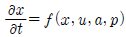
의 설명으로 틀린 것은?- a : 호수생태계의 특색을 나타내는 상수 vector
- f : 유입, 유출, 호수 내에서의 이류, 확산 등 상태 변수의 변화속도
- p : 수량부하，일사량 등에 관련되는 입력함수
- x : 호수 및 저니 속의 어떤 지점에서의 물리적, 화학적, 생물학적인 상태량
(정답률: 59%)
17. 미생물에 의한 산화·환원 반응에 있어 전자 수용체에 속하지 않는 것은?
- O2
- CO2
- NH3
- 유기물
(정답률: 63%)
18. 바다에서 발생되는 적조현상에 관한 설명과 가장 거리가 먼 것은?
- 적조 조류의 독소에 의한 어패류의 피해가 발생한다.
- 해수 중 용존산소의 결핍에 의한 어패류의 피해가 발생한다.
- 갈수기 해수 내 염소량이 높아질 때 발생된다.
- 플랑크톤의 번식에 충분한 광량과 영양염류가 공급될 때 발생된다.
(정답률: 79%)
19. 물의 특성을 설명한 것으로 적절치 못한 것은?
- 상온에서 알칼리금속, 알칼리토금속, 철과 반응하여 수소를 발생시킨다.
- 표면장력은 불순물농도가 낮을수록 감소한다.
- 표면장력은 수온이 증가하면 감소한다.
- 점도는 수온과 불순물의 농도에 따라 달라지는데 수온이 증가할수록 점도는 낮아진다.
(정답률: 70%)
20. 시료의 BOD5가 200mg/L이고 탈산소계수값이 0.l5day-1 일 때 최종 BOD(mg/L)는?
- 약 213
- 약 223
- 약 233
- 약 243
(정답률: 68%)
2과목: 상하수도계획
21. 배수지의 고수위와 저수위와의 수위차, 즉 배수지의 유효수심의 표준으로 적절한 것은?
- 1~2m
- 2~4m
- 3~6m
- 5~8m
(정답률: 73%)
22. 오수관로의 유속 범위로 알맞는 것은? (단，계획시간최대오수량 기준)
- 최소 0.2m/sec, 최대 2.0m/sec
- 최소 0.3m/sec, 최대 2.0m/sec
- 최소 0.6m/sec, 최대 3.0m/sec
- 최소 0.8m/sec, 최대 3.0m/sec
(정답률: 73%)
23. 정수시설 중 응집을 위한 시설인 플록형성지의 플록형성시간은 계획정수량에 대하여 몇분을 표준으로 하는가?
- 0.5~1분
- 1~3분
- 5~10분
- 20~40분
(정답률: 73%)
24. 응집 사설 중 완속교반시설에 관한 설명으로 틀린 것은?
- 완속교반기는 패들형과 터빈형이 사용된다.
- 완속교반 시 속도경사는 40~100초-1정도로 낮게 유지한다.
- 조의 형태는 폭:길이:깊이 = 1:1:1~1.2가 적당하다.
- 체류시간은 5~10분이 적당하고 3~4개의 실로 분리하는 것이 좋다.
(정답률: 65%)
25. 비교회전도가 700~1200인 경우에 사용되는 하수도용 펌프 형식으로 옳은 것은?
- 터빈펌프
- 볼류트펌프
- 축류펌프
- 사류펌프
(정답률: 66%)
26. 하수관로의 유속과 경사는 하류로 갈수록 어떻게 되도록 설계하여야 하는가?
- 유속 : 증가, 경사 : 감소
- 유속 : 증가, 경사 : 증가
- 유속 : 감소, 경사 : 증가
- 유속 : 감소, 경사 : 감소
(정답률: 63%)
27. 원형 원심력 철근콘크리트관에 만수된 상태로 송수된다고 할 때 Manning 공식에 의한 유속(m/sec)은? (단，조도계수 = 0.013, 동수경사 = 0.002, 관지름 d = 250 mm)
- 0.24
- 0.54
- 0.72
- 1.03
(정답률: 61%)
28. 취수탑의 위치에 관한 내용으로 ( )에 옳은 것은?
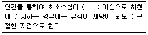
- 1m
- 2m
- 3m
- 4m
(정답률: 70%)
29. 상향류식 경사판 침전지의 표준 설계요소에 관한 설명으로 잘못된 것은?
- 표면부하율은 4~9mm/min로 한다.
- 침강장치는 1단으로 한다.
- 경사각은 55~60°로 한다.
- 침전지 내의 평균상승유속은 250 mm/min 이하로 한다.
(정답률: 54%)
30. 지하수(복류수포함)의 취수 시설 중 집수매거에 관한 설명으로 옳지 않는 것은?
- 복류수의 유황이 좋으면 안정된 취수가 가능하다.
- 하천의 대소에 영향을 받으며 주로 소하천에 이용된다.
- 침투된 물을 취수하므로 토사유입은 거의 없고 대개는 수질이 좋다.
- 하천바닥의 변동이나 강바닥의 저하가 큰 지점은 노출될 우려가 크므로 적당하지 않다.
(정답률: 49%)
31. 저수댐의 위치에 관한 설명으로 틀린 것은?
- 댐 지점 및 저수지의 지질이 양호하여야 한다.
- 가장 작은 댐의 크기로서 필요한 양의 물을 저수할 수 있어야 한다.
- 유역면적 이 작고 수원보호상 유리한 지형이어야 한다.
- 저수지용지 내에 보상해야 할 대상물이 적어야 한다.
(정답률: 60%)
32. 계획우수량을 정할 때 고려하여야 할 사항 중 틀린 것은?
- 하수관거의 확률년수는 원칙적으로 10~30년으로 한다.
- 유입시간은 최소단위배수구의 지표면특성을 고려하여 구한다.
- 유줄계수는 지형도를 기초로 답사를 통하여 충분히 조사하고 장래 개발계획을 고려하여 구한다.
- 유하시간은 최상류관거의 끝으로부터 하류관거의 어떤 지점까지의 거리를 계획유량에 대응한 유속으로 나누어 구하는 것을 원칙으로 한다.
(정답률: 54%)
33.
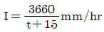
, 면적 2.0km2, 유입시간 6분, 유출계수 C = 0.65, 관내유속이 1m/sec인 경우, 관길이 600m인 하수관에서 흘러나오는 우수량(m3/sec)은? (단，합리식 적용)- 약 31
- 약 38
- 약 43
- 약 52
(정답률: 59%)
34. 하수와 배제방식 에 대한 설명으로 잘못된 것은?
- 하수의 배제방식에는 분류식과 합류식이 있다.
- 하수의 배제방식의 결정은 지역의 특성이나 방류수역의 여건을 고려해야 한다.
- 제반 여건상 분류식이 어려운 경우 합류식으로 설치할 수 있다.
- 분류식 중 오수관로는 소구경관로로 폐쇄 염려가 있고, 청소가 어렵고, 시간이 많이 소요된다.
(정답률: 67%)
35. 1분당 300m3의 물을 150 m 양정(전양정)할 때 최고효율점에 달하는 펌프가 있다. 이때의 회전수가 1500rpm이라면, 이 펌프의 비속도(비교회전도)는?
- 약 512
- 약 554
- 약 606
- 약 658
(정답률: 69%)
36. 계획오수량에 관한 내용으로 틀린 것은?
- 지하수 유입량은 토질, 지하수위, 공법에 따라 다르지만 1인1일 평균 오수량의 10~20%정도로 본다.
- 계획 1일 최대오수량은 1인1일 최대오수량에 계획인구를 곱한후 여기에 공장폐수량, 지하수량 및 기타배수량을 가산한 것으로 한다.
- 계획 1일 평균오수량은 계획1일 최대오수량의 70~80%를 표준으로 한다.
- 계획시간최대오수량은 계획1일 최대오수량의 1시간당의 수량의 1.3~1.8배를 표준으로한다.
(정답률: 52%)
37. 상수도시설의 등급별 내진설계 목표에 대한 내용으로 ( )에 옳은 내용은?
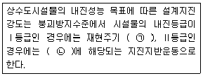
- ㉠ 100년, ㉡ 50년
- ㉠ 200년, ㉡ 100년
- ㉠ 500년, ㉡ 200년
- ㉠ 1000년, ㉡ 500년
(정답률: 66%)
38. 하수처리시설의 계획유입수질 산정방식으로 옳은 것은?
- 계획오염부하량을 계획1일평균오수량으로 나누어 산정한다.
- 계획오염부하량을 계획시간평균오수량으로 나누어 산정한다.
- 계획오염부하량을 계획1일최대오수량으로 나누어 산정한다.
- 계획오염부하량을 계획시간최대오수량으로 나누어 산정한다.
(정답률: 52%)
39. 정수시설인 급속여과지의 표준 여과속도(m/day) 는?
- 120~150
- 150~180
- 180~250
- 250~300
(정답률: 65%)
40. 지하수의 취수지점 선정에 관련한 설명 중 틀린 것은?
- 연해부의 경우에는 해수의 영향을 받지 않아야 한다.
- 얄은 우물인 경우에는 오염원으로부터 5m 이상 떨어져서 장래에도 오염의 영향을 받지 않는 지점이어야 한다.
- 기존 우물 또는 집수매거의 취수에 영향을 주지 않아야 한다.
- 복류수인 경우에 장래에 일어날 수 있는 유로변화 또는 하상저하 등을 고려하고 하천개수계획에 지장이 없는 지점을 선정한다.
(정답률: 70%)
3과목: 수질오염방지기술
41. 하수처리방식 중 회전원판법에 관한 설명으로 가장 거리가 먼 것은?
- 활성슬러지법에 비해 2차 침전지에서 미세한 SS가 유출되기 쉽고, 처리수의 투명도가 나쁘다.
- 운전관리상 조작이 간단한 편이다.
- 질산화가 거의 발생하자 않으며, pH 저하도 거의 없다.
- 소비 전력량이 소규모 처리시설에서는 표준 활성 슬러지법에 비하여 적은 편이다.
(정답률: 56%)
42. 무기물이 0.30g/gVSS로 구성된 생물성 VSS 를 나타내는 폐수의 경우, 혼합액 중의 TSS와 VSS 농도가 각각 2000mg/L, 1480mg/L라 하면 유입수로부터 기인된 불활성 고형물에 대한 혼합액 중의 농도(mg/L)는? (단，유입된 불활성 부유 고형물질의 용해는 전혀 없다고 가정)
- 76
- 86
- 96
- 116
(정답률: 38%)
43. 반지름이 8 cm인 원형 관로에서 유체의 유속이 20m/sec일 때 반지름이 40cm인 곳에서의 유속(m/sec)은? (단, 유량 동일, 기타 조건은 고려하지 않음)
- 0.8
- 1.6
- 2.2
- 3.4
(정답률: 57%)
44. 포기조 부피가 1000m3이고 MLSS 농도가 3500mg/L일 때, MLSS 농도를 2500mg/L로 운전하기 위해 추가로 폐기시켜야 할 잉여슬러지량(m3)은? (단, 반송슬러지 농도 =8000mg/L)
- 65
- 85
- 1⑤
- 125
(정답률: 41%)
45. 활성슬러지 공정에서 폭기조 유입 BOD가 180mg/L, SS가 180mg/L, BOD-슬러지 부하가 0.6kg BOD/kg MLSS·day일 때, MLSS 농도(mg/L)는? (단, 폭기조 수리학적 체류시간= 6시간)
- 1100
- 1200
- 1300
- 1400
(정답률: 54%)
46. 폐수로부터 암모니아를 제거하는 방법의 하나로 천연 제올라이트를 사용하기로 한다. 천연 제올라이트로 암모니아를 제거할 경우 재생방법을 가장 적절하게 나타낸 것은?
- 깨끗한 증류수로 세척한다.
- 황산이나 질산 등 산성 용액으로 재생한다.
- NaOH나 석회수 둥 알칼리성 용액으로 재생한다.
- LAS 등 세제로 세척한 후 가열하여 재생한다.
(정답률: 52%)
47. 폐수의 고도처리에 관한 다음의 기술 중 옳지 않은 것은?
- Cl-, SO42- 등의 무기염류의 제거에는 전기투석법이 이용된다.
- 활성탄 흡착법에서 폐수 중의 인산은 제거되지 않는다.
- 모래여과법은 고도처리 중에서 흡착법이나 전기투석법의 전처리로써 이용된다.
- 폐수 중의 무기성질소 화합물은 철염에 의한 응집침전으로 완전히 제거된다.
(정답률: 50%)
48. 총 잔류염소 농도를 3.⑤mg/L에서 1.00mg/L로 탈염시키기 위해 유량 4350m3/day인 물에 가해주는 아황산염 (SO32-)의 양(kg/day)은? (단, 원자량 : C1 = 35.5, S = 32.1)
- 약 6
- 약 8
- 약 10
- 약 12
(정답률: 42%)
49. 슬러지의 열처리에 대해 기술한 것으로 옳지 않은 것은?
- 슬러지의 열처리는 탈수의 전처리로서 한다.
- 슬러지의 열처리에 의해, 슬러지의 탈수성과 침강성이 좋아진다.
- 슬러지의 열처리에 의해, 슬러지 중의 유기물이 가수분해되어 가용화된다.
- 슬러지의 열처리에 의한 분리액은 BOD가 낮으므로 그대로 방류할 수 있다.
(정답률: 62%)
50. 길이:폭의 비가 3:1인 장방형 침전조에 유량 850m3/day의 흐름이 도입된다. 깊이는 4.0m 이고 체류시간은 1.92hr이라면 표면부하율(m3/m2·day)은? (단, 흐름은 침전조 단면적에 균일하게 분배)
- 20
- 30
- 40
- 50
(정답률: 45%)
51. 수질 성분이 부식에 미치는 영향으로 틀린 것은?
- 높은 알칼리도는 구리와 납의 부식을 증가시킨다.
- 암모니아는 착화물 형성을 통해 구리, 납 등의 금속용해도를 증가시킬 수 있다.
- 잔류염소는 Ca와 반응하여 금속의 부식을 감소시킨다.
- 구리는 갈바닉 전지를 이룬 배관상에 흠집(구멍)을 야기한다.
(정답률: 59%)
52. 잔류염소 농로 0.6mg/L에서 3분간에 90%의 세균이 사멸되었다면 같은 농도에서 95%살균을 위해서 필요한 시간(분)은? (단, 염소소독에 의한 세균의 사멸이 1차반응속도식을 따른다고 가정)(오류 신고가 접수된 문제입니다. 반드시 정답과 해설을 확인하시기 바랍니다.)
- 2.6
- 3.2
- 3.9
- 4.5
(정답률: 56%)
53. 1차 처리결과 슬러지의 함수율이 80%, 고형물 중 무기성고형물질의 30%, 유기성고형물질이 70%, 유기성 고형물질의 비중 1.1, 무기성고형물질의 비중이 2.2일 때 슬러지의 비중은?
- 1.017
- 1.023
- 1.032
- 1.047
(정답률: 43%)
54. 생물학적 3차 처리를 위한 A/O 공정을 나타낸 것으로 반응조 역할을 가장 적절하게 설명한 것은?
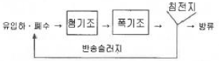
- 혐기조에서는 유기물 제거와 인의 방출이 일어나고, 폭기조에서는 인의 과잉섭취가 일어난다.
- 폭기조에서는 유기물 제거가 일어나고, 혐기조에서는 질산화 및 탈질이 동시에 일어난다.
- 제거율을 높이가 위해서는 외부탄소원인 메탄올 등을 폭기조에 주입한다.
- 혐기조에서는 인의 과잉섭취가 일어나며, 폭기조에서는 질산화가 일어난다.
(정답률: 64%)
55. 여섯개의 납작한 날개를 가진 터빈임펠러로 탱크의 내용물을 교반하려 한다. 교반은 난류 영역에서 일어나며 임펠러의 직경은 3m이고 깊이 20m, 바닥에서 4m 위에 설치되어 있다. 30rpm으로 임펠러가 회전할 때 소요되는 동력 (kg·m/s)은? (단, P = kρn3D5/gc 식 적용, 소요 동력을 나타내는 계수 k = 3.3)
- 9356
- 10228
- 12350
- 15421
(정답률: 38%)
56. 하수로부터 인 제거를 위한 화학제의 선택에 영향을 미치는 인자가 아닌 것은?
- 유입수의 인 농도
- 슬러지 처리시설
- 알칼리도
- 다른 처리공정과의 차별성
(정답률: 65%)
57. 무기수은계 화합물을 함유한 폐수의 처리방법이 아닌 것은?
- 황화물 침전법
- 활성탄 흡착법
- 산화분해법
- 이온교환법
(정답률: 50%)
58. 하수처리과정에서 소독 방법 중 염소와 자외선 소독의 장·단점을 비교할 때 염소소독의 장·단점으로 틀린 것은?
- 암모니아의 첨가에 의해 결합잔류염소가 형성된다.
- 염소접촉조로부터 휘발성유기물이 생성된다.
- 처리수의 총용존고형물이 감소한다.
- 처리수의 잔류독성이 탈염소과정에 의해 제거되어야 한다.
(정답률: 64%)
59. 질소 제거를 위한 파괴점 염소 주입법에 관한 설명과 가장 거리가 먼 것은?
- 적절한 운전으로 모든 암모니아성 질소의 산화가 가능하다.
- 시설비가 낮고 기존 시설에 적용이 용이하다.
- 수생생물에 독성을 끼치는 잔류염소농도가 높아진다.
- 독성물질과 온도에 민감하다.
(정답률: 44%)
60. CFSTR에서 물질을 분해하여 효율 95%로 처리하고자 한다. 이 물질은 0.5차 반응으로 분해되며，속도상수는 0.⑤(mg/L)1/2/h이다. 유량은 500L/h이고 유입농도는 250mg/L로 일정하다면 CFSTR의 필요 부피(m3)는? (단，정상상태 가정)
- 약 520
- 약 570
- 약 620
- 약 670
(정답률: 35%)
4과목: 수질오염공정시험기준
61. 수질분석용 시료의 보존 방법에 관한 설명 중 틀린 것은?
- 6가 크롬분석용 시료는 c-HNO3 1mL/L를 넣어 보관한다.
- 페놀분석용 시료는 인산을 넣어 pH 4 이하로 조정한 후, 황산구리 (1g/L)를 첨가하여 4°C에서 보관한다.
- 시안 분석용 시료는 수산화나트륨으로 pH 12 이상으로 하여 4°C 에서 보관한다.
- 화학적산소요구량 분석용 시료는 황산으로 pH 2 이하로 하여 4°C에서 보관한다.
(정답률: 46%)
62. BOD측정 시 표준 글루코오스 및 글루타민산 용액의 적정 BOD값(mg/L)이 아닌 것은?(단，글루코오스 및 글루타민산을 각 150mg씩 물에 녹여 1000mL로 함)
- 200
- 215
- 230
- 260
(정답률: 41%)
63. 0.1mgN/mL 농도의 NH3-N 표준원액을 1L 조제하고자 할 때 요구되는 NH4Cl의 양(mg/L)은? (단，NH4Cl의 MW = 53.5)
- 227
- 382
- 476
- 591
(정답률: 45%)
64. 불소 측정시험 시 수증기 증류법으로 전처리하지 않아도 되는 것은?
- 색도가 30도인 시료
- P043-의 농도가 4mg/L인 시료
- Al3+의 농도가 2mg/L인 시료
- Fe2+의 농도가 7mg/L인 시료
(정답률: 42%)
65. 전기전도도의 정밀도 기준으로 ( )에 옳은 것은?
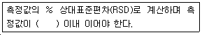
- 15%
- 20%
- 25%
- 30%
(정답률: 47%)
66. pH 표준액의 온도보정은 온도별 표준액의 pH값을 표에서 구하고 또한 표에 없는 온도의 pH값은 내삽법으로 구한다. 다음 중 20°C 에서 가장 낮은 pH값을 나타내는 표준액은?
- 붕산염 표준액
- 프탈산염 표준액
- 탄산염 표준액
- 인산염 표준액
(정답률: 50%)
67. 20°C 이하에서 BOD 측정 시료의 용존산소가 과포화되어 있을 때 처리하는 방법은?
- 시료의 산소 과포화되어 있어도 배양전 용존 산소 값으로 측정됨으로 상관이 없다.
- 시료의 수온을 23~25°C로 하여 15분간 통기하고 방냉한 후 수온을 20°C로 한다.
- 아황산나트륨을 적당량 넣어 산소를 소모시킨다.
- 5°C 이하로 냉각시켜 냉암소에서 15분간 잘 저어준다.
(정답률: 58%)
68. 자외선/가시선 분광법을 적용하여 페놀류를 측정할 때 사용되는 시약은?
- 4-아미노안티피린
- 인도 페놀
- O-페난트로린
- 디티죤
(정답률: 58%)
69. 시료. 중 구리, 아연, 납, 카드뮴, 니켈, 철, 망간, 6가크롬, 코발트 및 은등 측정에 적용되고 이들을 암모니아수로 색을 변화 후 다시 산으로 처리하는 전처리 방법은?
- DDTC - MIBK 법
- 디티존 - MIBK 법
- 디티존 - 사염화탄소법
- APDC - MIBK 법
(정답률: 43%)
70. 수질오염공정시험기준상 기체크로마토그래피법으로 정량하는 물질은?
- 불소
- 유기인
- 수은
- 비소
(정답률: 45%)
71. '항량으로 될 때까지 강열한다.'는 의미에 해당하는 것은?
- 강열할 때 전후무게의 차가 g당 0.1mg 이하일 때
- 강열할 때 전후무게의 차가 g당 0.3mg 이하일 때
- 강열할 때 전후무게의 차가 g당 0.5mg 이하일 때
- 강열할 때 전후무게의 차가 없을 때
(정답률: 64%)
72. 온도에 관한 내용으로 옳지 않는 것은?
- 찬 곳은 따로 규정이 없는 한 0~15°C의 곳을 뜻한다.
- 냉수는 15°C이하를 말한다.
- 온수는 70~90°C를 말한다.
- 상온은 15~25°C를 말한다.
(정답률: 67%)
73. 흡광 광도 측정에서 입사광의 60%가 흡수되었을 때의 흡광도는?
- 약 0.6
- 약 0.5
- 약 0.4
- 약 0.3
(정답률: 58%)
74. 자외선/가시선 분광법을 이용한 철의 정량에 관한 내용으로 틀린 것은?
- 등적색 철착염의 흡광도를 측정하여 정량한다.
- 측정파장은 510nm이다.
- 염산 히드록실아민에 의해 산화제이철로 산화된다.
- 철이온을 암모니아 알칼리성으로 하여 수산화제이철로 침전분리 한다.
(정답률: 39%)
75. 시료를 채취해 얻은 결과가 다음과 같고, 시료량이 50mL이었을 때 부유고형물의 농도(mg/L)와 휘발성부유고형물의 농도(mg/L)는?
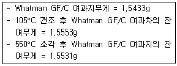
- 44, 240
- 240, 44
- 24, 4.4
- 4.4, 24
(정답률: 48%)
76. 다음 중 용량분석법으로 측정하지 않는 항목은?
- 용존산소
- 부유물질
- 화학적산소요구량
- 염소이온
(정답률: 46%)
77. 시료 채취 시 유의사항으로 틀린 것은?
- 채취 용기는 시료를 채우기 전에 시료로 3회 이상 씻은 다음 사용한다.
- 시료 채취 용기에 시료를 채울 때에는 어떠한 경우에도 시료의 교란이 일어나서는 안 된다.
- 지하수 시료는 취수정 내에 고여 있는 물과 원래 지하수의 성상이 달라질 수 있으므로 고여 있는 물을 충분히 퍼낸 다음 새로 나온 물을 채취한다.
- 시료채취량은 시험항목 및 시험횟수의 필요량의 3~5배 채취를 원칙으로 한다.
(정답률: 64%)
78. COD측정에서 최초의 첨가한 KMnO4량의 1/2 이상이 남도록 첨가하는 이유는?
- KMnO4 잔류량이 1/2 이하로 되면 유기물의 분해온도가 저하한다.
- KMnO4 잔류량이 1/2 이상이면 모든 유기물의 산화가 완료한다.
- KMnO4 잔류량이 많을 경우 유기물의 산화속도가 저하한다.
- KMnO4 농도가 저하되면 유기물의 산화율이 저하한다.
(정답률: 40%)
79. 원자흡수분광광도법을 적용하여 비소를 분석할 때 수소화비소를 직접적으로 발생시키기 위해 사용하는 시약은?
- 염화제일주석
- 아연
- 요오드화칼륨
- 과망간산칼륨.
(정답률: 33%)
80. 0.1N Na2S2O3 용액 100ml에 증류수를 가해 500ml로 한 다음, 여기서 250ml을 취하여 다시 증류수로 전량 500ml로 하면 용액의 규정농도(N)는?
- 0.01
- 0.02
- 0.04
- 0.⑤
(정답률: 38%)
5과목: 수질환경관계법규
81. 사업자가 환경기술인을 바꾸어 임명하는 경우는 그 사유가 발생한 날부터 며칠이내에 신고하여야 하는가?
- 3일
- 5일
- 7일
- 10일
(정답률: 45%)
82. 공공수역에 정당한 사유없이 특정수질유해물질 등을 누출·유출시키거나 버린 자에 대한 처벌기준은?
- 1년 이하의 징역 또는 1천만원 이하의 벌금
- 2년 이하의 징역 또는 2천만원 이하의 벌금
- 3년 이하의 징역 또는 3천만원 이하의 벌금
- 5년 이하의 징역 또는 5천만원 이하의 벌금
(정답률: 39%)
83. 공공폐수처리시설의 유지·관리기준에 관한 내용으로 ( )에 맞는 것은?
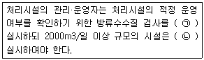
- ㉠ 분기 1회 이상, ㉡ 월 1회 이상
- ㉠ 월 1회 이상, ㉡ 월 2회 이상
- ㉠ 월 2회 이상, ㉡ 주 1회 이상
- ㉠ 주 1회 이상, ㉡ 수시
(정답률: 60%)
84. 물환경보전법상 용어의 정의 중 틀린 것은?
- 폐수라 함은 물에 액체성 또는 고체성의 수질오염물질이 혼입되어 그대로 사용할 수 없는 물을 말한다.
- 수질오염물질이라 함은 수질오염의 요인이 되는 물질로서 환경부령으로 정하는 것을 말한다.
- 폐수배출시설이라 함은 수질오염물질을 공공수역에 배출하는 시설물·기계·기구·장소 기타 물체로서 환경부령으로 정하는 것을 말한다.
- 수질오염방지시설이라 함은 폐수배출시설로부터 배출되는 수질오염물질을 제거하거나 감소시키는 시설로서 환경부령으로 정하는 것을 말한다.
(정답률: 45%)
85. 기본배출부과금 산정에 필요한 지역별 부과계수로 옳은 것은?
- 청정지역 및 가 지역 : 1.5
- 청정지역 및 가 지역 : 1.2
- 나 지역 및 특례지역 : 1.5
- 나 지역 및 특례지역 : 1.2
(정답률: 59%)
86. 오염총량관리기본방침에 포함되어야 할 사항으로 틀린 것은?
- 오염원의 조사 및 오염부하량 산정방법
- 오담총량관리사행 대상 유역 현황
- 오염총량관리의 대상 수질오염물질 종류
- 오염총량관리의 목표
(정답률: 45%)
87. 다음은 배출시설의 설치허가를 받은 자가 배출시설의 변경허가를 받아야 하는 경우에 대한 기준이다. ( )에 들어갈 내용으로 옳은 것은?
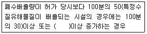
- 1일 500세제곱미터
- 1일 600세제곱미터
- 1일 700세제곱미터
- 1일 800세제곱미터
(정답률: 56%)
88. 폐수수탁처리업에서 사용하는 폐수운반차량에 관한 설명으로 틀린 것은?
- 청색으로 도색한다.
- 차량 양쪽 옆면과 뒷면에 폐수운반차량, 회사명, 등록번호, 전화번호 및 용량을 표시하여야 한다.
- 차량에 표시는 흰색바탕에 황색글씨로 한다.
- 운송 시 안전을 위한 보호구, 중화제 및 소화기를 갖추어 두어야 한다.
(정답률: 63%)
89. 위임업무 보고사항 중 “골프장 맹·고독성 농약 사용 여부 확인 결과”의 보고횟수 기준은?
- 수시
- 연 4회
- 연 2회
- 연 1회
(정답률: 60%)
90. 대권역 물환경관리계획에 포함되지 않는 것은?
- 상수원 및 물 이용 현황
- 수질오염 예방 및 저감 대책
- 기후변화에 대한 적응 대책
- 폐수배출시설의 설치 제한 계획
(정답률: 42%)
91. 수질오염 방지시설 중 화화적 처리시설에 해당되는 것은?
- 침전물 개량시설
- 혼합시설
- 응집시설
- 증류시설
(정답률: 42%)
92. 시·도지사는 공공수역의 수질보전을 위하여 환경부령이 정하는 해발고도 이상에 위치한 농경지 중 환경부령이 정하는 경사도 이상의 농경지를 경작하는 자에 대하여 경작방식의 변경, 농약·비료의 사용량 저감, 휴경 등을 권고할 수 있다. 위에서 언급한 환경부령이 정하는 해발고도와 경사도 기준은?
- 400미터, 15퍼센트
- 400미터, 25퍼센트
- 600미터, 15퍼센트
- 600미터, 25퍼센트
(정답률: 60%)
93. 현장에서 배줄허용기준 또는 방류수수질기준의 초과 여부를 판정할 수 있는 수질오염물질 항목으로 나열한 것은?
- 수소이온농도, 화학적산소요구량, 총질소, 부유물질량
- 수소이온농도, 화학적산소요구량, 용존산소, 총인
- 총유기탄소, 화학적산소요구량, 용존산소, 총인
- 총유기탄소, 생물학적산소요구량, 총질소, 부유물질량
(정답률: 38%)
94. 최과부과금 산정 시 적용되는 위반횟수별 부과계수에 관한 내용으로 ( )에 맞는 것은?(단, 폐수무방류배출시설의 경우)
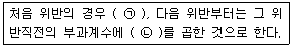
- ㉠ 1.5, ㉡ 1.3
- ㉠ 1.5, ㉡ 1.5
- ㉠ 1.8, ㉡ 1.3
- ㉠ 1.8, ㉡ 1.5
(정답률: 59%)
95. 1일 200톤 이상으로 특정수질유해물질을 배출하는 산업단지에서 설치하여야 할 시설은?
- 무방류배출시설
- 완충저류시설
- 폐수고도처리시설
- 비점오염저감시설
(정답률: 34%)
96. 환경정책기본법령에 따른 수질 및 수생태계환경기준 중 하천의 생활환경 기준으로 옳지 않은 것은? (단，등급은 매우 좋음 기준)
- 수소이온 농도(pH) : 6.5~8.5
- 용존산소량 DO(mg/L) ： 7.5 이상
- 부유물질량(mg/L) : 25 이하
- 총인(mg/L) : 0.1 이하
(정답률: 41%)
97. 오염총량관리기본계획 수립 시 포함되지 않는 내용은?'
- 해당 지역 개확계획의 내용
- 지방자치단체별·수계구간별 오염부하량의 할당
- 관할 지역에서 배출되는 오염부하량의 총량 및 저감계획
- 오염총량초과부과금의 산정방법과 산정기준
(정답률: 38%)
98. 비점오염저감시설의 설치와 관련된 사항으로 틀린 것은?
- 도시의 개발, 산업단지의 조성 등 사업을 하는 자는 환경부령이 정하는 기간 내에 비점오염저감시설을 설치하여야 한다.
- 강우유출수의 오염도가 항상 배출허용기준 이내로 배출되는 사업장은 비점오염저감시설을 설치하지 아니할 수 있다.
- 한강대권역의 완충저류시설에 유입하여 강우유출수를 처리할 경우 비점오염저감 시설을 설치하지 아니할 수 있다.
- 대통령령으로 정하는 규모 이상의 사업장에 제철시설, 섬유염색시설, 그 밖에 대통령령으로 정하는 폐수배출시설을 설치하는 자는 비점오염저감시설을 설치하여야 한다.
(정답률: 39%)
99. 폐수처리방법이 생물화학적 처리방법인 경우 시운전기간 기준은? (단, 가동시작일은 2월 3일이다.)
- 가동시작일부터 50일로 한다.
- 가동시작일부터 60일로 한다.
- 가동시작일부터 70일로 한다.
- 가동시작일부터 90일로 한다.
(정답률: 52%)
100. 환경부장관이 수질 등의 측정자료를 관리·분석하기 위하여 즉정기기 부착사업자 등이 부착한 측정기기와 연결, 그 측정결과를 전산 처리할 수 있는 전산망 운영을 위한 수질원격 감시체계 관제센터를 설치·운영할 수 있는 곳은?
- 국립환경과학원
- 유역환경청
- 한국환경공단
- 시·도 보건환경연구원
(정답률: 49%)